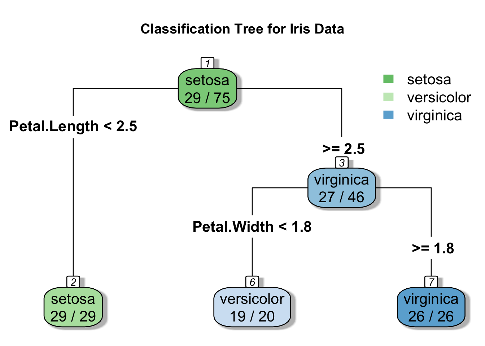

library(rpart)Introduction:
Decision trees are a popular machine learning algorithm due to their simplicity, interpretability, and versatility. They can be used for both regression and classification problems. In this blog post, we will walk you through how to implement a decision tree in R.
Decision Trees are a type of supervised Machine Learning algorithm used for both regression and classification problems. They are tree-based models that split the data into smaller subsets based on certain conditions. The final output is obtained by combining the results of multiple splits.
The Iris Dataset:
The Iris dataset is a multivariate dataset introduced by the British statistician and biologist Ronald Fisher in his 1936 paper. The dataset consists of 50 samples from each of three species of Iris flowers (Iris setosa, Iris virginica, and Iris versicolor). Four features were measured from each sample: the lengths and the widths of the sepals and petals.
Load necessary libraries
Step 1: Import the data
nsample = nrow(iris)Set the random seed for reproducibility
set.seed(0)Step 2: Split data into training and test sets
# split data into training and test sets
train.ix = sample(1 : nsample, round(nsample / 2))
test.ix = setdiff(1 : nsample, train.ix)
train.df = iris[train.ix, ]; test.df = iris[test.ix, ]Step 3: Build the model:
ctmodel = rpart(Species ~ Sepal.Length + Sepal.Width + Petal.Length
+ Petal.Width, method = "class", data = train.df)
summary(ctmodel) # detailed summary of splitsCall:
rpart(formula = Species ~ Sepal.Length + Sepal.Width + Petal.Length +
Petal.Width, data = train.df, method = "class")
n= 75
CP nsplit rel error xerror xstd
1 0.5869565 0 1.00000000 1.08695652 0.08874963
2 0.3913043 1 0.41304348 0.41304348 0.08188085
3 0.0100000 2 0.02173913 0.02173913 0.02159372
Variable importance
Petal.Width Petal.Length Sepal.Length Sepal.Width
33 30 22 15
Node number 1: 75 observations, complexity param=0.5869565
predicted class=setosa expected loss=0.6133333 P(node) =1
class counts: 29 19 27
probabilities: 0.387 0.253 0.360
left son=2 (29 obs) right son=3 (46 obs)
Primary splits:
Petal.Length < 2.45 to the left, improve=26.94899, (0 missing)
Petal.Width < 0.8 to the left, improve=26.94899, (0 missing)
Sepal.Length < 5.55 to the left, improve=22.28490, (0 missing)
Sepal.Width < 3.35 to the right, improve=11.74540, (0 missing)
Surrogate splits:
Petal.Width < 0.8 to the left, agree=1.000, adj=1.000, (0 split)
Sepal.Length < 5.45 to the left, agree=0.933, adj=0.828, (0 split)
Sepal.Width < 3.35 to the right, agree=0.840, adj=0.586, (0 split)
Node number 2: 29 observations
predicted class=setosa expected loss=0 P(node) =0.3866667
class counts: 29 0 0
probabilities: 1.000 0.000 0.000
Node number 3: 46 observations, complexity param=0.3913043
predicted class=virginica expected loss=0.4130435 P(node) =0.6133333
class counts: 0 19 27
probabilities: 0.000 0.413 0.587
left son=6 (20 obs) right son=7 (26 obs)
Primary splits:
Petal.Width < 1.75 to the left, improve=20.404350, (0 missing)
Petal.Length < 4.75 to the left, improve=16.904350, (0 missing)
Sepal.Length < 6.15 to the left, improve= 6.787779, (0 missing)
Sepal.Width < 2.75 to the left, improve= 3.686701, (0 missing)
Surrogate splits:
Petal.Length < 4.75 to the left, agree=0.913, adj=0.80, (0 split)
Sepal.Length < 6.15 to the left, agree=0.761, adj=0.45, (0 split)
Sepal.Width < 2.75 to the left, agree=0.696, adj=0.30, (0 split)
Node number 6: 20 observations
predicted class=versicolor expected loss=0.05 P(node) =0.2666667
class counts: 0 19 1
probabilities: 0.000 0.950 0.050
Node number 7: 26 observations
predicted class=virginica expected loss=0 P(node) =0.3466667
class counts: 0 0 26
probabilities: 0.000 0.000 1.000 Visualize the decision tree:
# Load necessary libraries
library(rpart.plot)
library(ggplot2)
# Plot the decision tree
rpart.plot(ctmodel, type = 4, extra = 2, tweak = 1.3, varlen = 0, nn = TRUE, fallen.leaves = TRUE,
box.palette = "GnBu", shadow.col = "gray", main = "Classification Tree for Iris Data")
Perform classification for test set:
pred.id = predict(ctmodel, test.df, type = "class")# pred.mat = predict(ctmodel, test.df)
# pred.numid = apply(pred.mat, 1, which.max)
# mcr = mean(pred.numid != as.numeric(test.df$Species))
# pred.id = cut(pred.numid, breaks = 0 : 3 + 0.5, labels = levels(test.id))
test.id = test.df$Species
mcr = mean(pred.id != test.id)
table(test.id, pred.id) pred.id
test.id setosa versicolor virginica
setosa 21 0 0
versicolor 0 30 1
virginica 0 4 19Random forest
Introduction to Random Forests:
Random Forest is a powerful Machine Learning algorithm that was first introduced by Leo Breiman and Adele Cutler in 2001. It is an ensemble learning method that operates by constructing multiple decision trees during training time and outputting the class that is the mode of the classes (classification) or mean prediction (regression) of the individual trees.
Advantages of Random Forests:
Excellent Predictive Powers: Random Forests have excellent predictive capabilities, making them useful for applications where accuracy really matters.
Robust to Outliers: Random Forests are robust to outliers.
Works Well with Non-linear Data: Random Forests work well with non-linear data.
Lower Risk of Overfitting: Compared to decision trees, Random Forests have a lower risk of overfitting.
Efficient with Large Datasets: Random Forests run efficiently on large datasets.
Handles Missing Data Well: Just like decision trees, random forests handle missing values effectively.
Disadvantages of Random Forests:
Requires Much Computational Power and Resources: As it builds numerous trees to combine their outputs, it requires much computational power and resources.
Requires Much Time for Training: It requires much time for training as it combines a lot of decision trees to determine the class.
Interpretability Issues: Due to the ensemble of decision trees, it also suffers interpretability and fails to determine the significance of each variable.
Overfitting Risk: Although much lower than decision trees, overfitting is still a risk with random forests and something you should monitor.
Limited with Regression: While random forest is almost unmatched in most classification solutions, it can be limited with regression, especially when data has a linear nature.
Lets understand this from the real example:
Load the necessary libarary:
library(randomForest)randomForest 4.7-1.1Type rfNews() to see new features/changes/bug fixes.
Attaching package: 'randomForest'The following object is masked from 'package:ggplot2':
marginrfmodel = randomForest(Species ~ Sepal.Length + Sepal.Width
+ Petal.Length + Petal.Width, data = train.df)
print(rfmodel) # view results
Call:
randomForest(formula = Species ~ Sepal.Length + Sepal.Width + Petal.Length + Petal.Width, data = train.df)
Type of random forest: classification
Number of trees: 500
No. of variables tried at each split: 2
OOB estimate of error rate: 2.67%
Confusion matrix:
setosa versicolor virginica class.error
setosa 29 0 0 0.00000000
versicolor 0 18 1 0.05263158
virginica 0 1 26 0.03703704importance(rfmodel) MeanDecreaseGini
Sepal.Length 5.3646953
Sepal.Width 0.8873669
Petal.Length 18.6814751
Petal.Width 23.6697027Perform classification for test set:
pred.id = predict(rfmodel, test.df)
test.id = test.df$SpeciesMisclassification calculation rate:
mcr = mean(pred.id != test.id)
table(test.id, pred.id) pred.id
test.id setosa versicolor virginica
setosa 21 0 0
versicolor 0 30 1
virginica 0 4 19ctmodel.2 = getTree(rfmodel, k = 2) # get the second tree
print(ctmodel.2) left daughter right daughter split var split point status prediction
1 2 3 3 2.85 1 0
2 0 0 0 0.00 -1 1
3 4 5 4 1.75 1 0
4 0 0 0 0.00 -1 2
5 0 0 0 0.00 -1 3